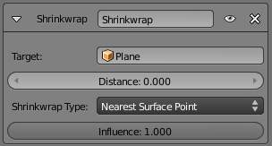

Shrinkwrap Constraint¶
The Shrinkwrap constraint is the “object counterpart” of the Shrinkwrap modifier. It moves the owner origin and therefore the owner object’s location to the surface of its target.
This implies that the target must have a surface. In fact,
the constraint is even more selective, as it can only use meshes as targets. Hence,
the Shrinkwrap option is only shown in the Add Constraint to Active Object menu,
Ctrl-Alt-C, (or its bone’s equivalent),
when the selected inactive object is a mesh.
Options¶

{kind=link}
Shrinkwrap panel.
- Target
- This constraint uses one target, which must be a mesh object, and is not functional (red state) when it has none.
- Distance
- This numeric field controls the offset of the owner from the shrunk computed position on the target’s surface. Positive values place the owner “outside” of the target, and negative ones, “inside” the target. This offset is applied along the straight line defined by the original (i.e. before constraint) position of the owner, and the computed one on the target’s surface.
- Shrinkwrap Type
This drop-down list allows you to select which method to use to compute the point on the target’s surface to which to translate the owner’s center. You have three options:
- Nearest Surface Point
- The chosen target’s surface’s point will be the nearest one to the original owner’s location. This is the default and most commonly useful option.
- Projection
- The target’s surface’s point is determined by projecting the owner’s center along a given axis. This axis is controlled by the three X, Y and Z toggle buttons that show up when you select this type. This mean the projection axis can only be aligned with one of the global axes, median to both of them (XY, XZ or YZ), or to the three ones (XYZ). When the projection of the owner’s center along the selected direction does not hit the target’s surface, the owner’s location is left unchanged.
- Nearest Vertex
- This method is very similar to the Nearest Surface Point one, except that the owner’s possible shrink locations are limited to the target’s vertices.